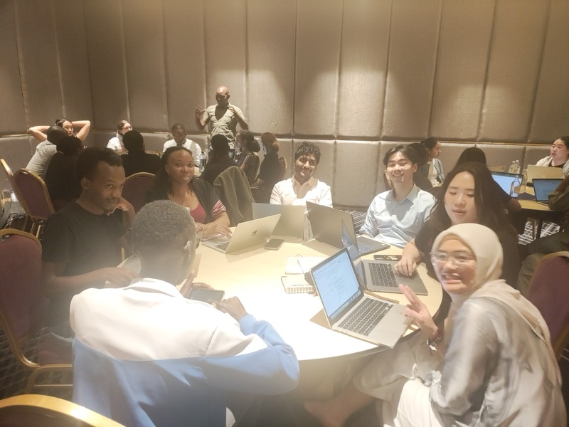

Research & Transparency Platform
CarbonWatch Kenya
A single platform for transparent carbon flows and bidirectional community communication: SMS, IVR, and USSD in one place, one centralized repository, one public dashboard.
Community-facing transparency for Kenya conservancies
Project focus
CarbonWatch is a community-facing transparency platform. It tracks Verra-registered projects in Kenya (e.g. NRT, Komaza, Boomitra, KCSA), connects conservancy members through bidirectional channels (SMS/IVR and USSD), adds empowerment measurement (SCOUT), and surfaces everything in one Public Dashboard fed by a single centralized repository.
CarbonWatch Kenya is being built from research by SMART in partnership with Agency for Inclusive Innovation Development (AIID-Africa). Kenya hosts 230+ conservancies and vast community-managed lands; the system is designed for long-term scaling—carbon transparency first, then governance, livelihoods, and conservancy monitoring at national scale.
Team photos
Highlights from the CarbonWatch Kenya team in the field in Nanyuki and Nairobi, Kenya.
1 / 6
Data flow
SMS/IVR and USSD (and manual entries) feed into a single centralized repository; the Public Dashboard is the front-end for data description and analysis. Community members can send and request data via SMS, IVR, or USSD. SCOUT is CarbonWatch’s survey tool for empowerment and governance in conservancy communities, aligned to ILRI WELI dimensions. The dashboard shows Kenya project-level data and per-conservancy figures where disclosed.
Platform tools
Public Dashboard is the front-end for Kenya project data, map, Verra Registry credit buyer retirements, and export. Community Interface is SMS, IVR, and USSD in one place—send and request data, switch tabs for each channel. SCOUT is the empowerment and governance survey. Sources gives citations and methodology for every figure.
Data
Public Dashboard
Kenya project data, verification cycles, conservancy map, carbon credit buyers (sourced from the Verra Registry), and export.
View dashboard → CommunicationCommunity Interface
SMS, IVR, and USSD in one place: send and request data (alerts, feedback, carbon payment status, grievances). Switch tabs for SMS or USSD.
Explore → SurveySCOUT Tool
CarbonWatch’s survey tool for empowerment and governance—aligned to WELI dimensions. Run the survey here or in the field.
Start survey → MethodologySources
Verra Registry, NRT, WELI/Pro-WEAI, and methodology—citations for every figure and map.
View sources →